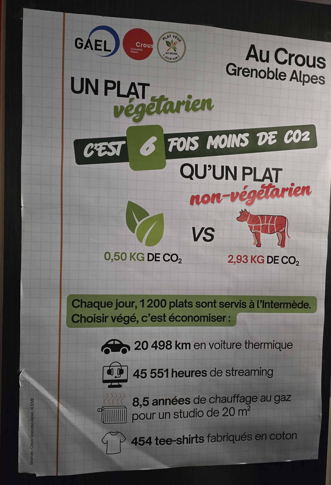

La viande en chiffres
Comment évolue notre consommation ?
Quantités annuelles par habitant
Les prix de la viande augmentent-ils plus vite que les revenus ?
- Le revenu augmente plus vite
- Les prix augmentent plus vite
Quelle part de la viande consommée en France est importée ?
Importations rapportées à l'utilisation intérieure, en tonnes équivalent-carcasse
Survolez une barre pour lire le taux d'importation de la viande.
*Viande ovine : depuis 2021, les importations incluent de la viande britannique réexportée, ce qui gonfle fortement le taux
Les émissions liées à la production de viande dans le monde
Production de viande et émissions annuelles à la ferme, par pays.
Détail par pays
Évolution de la catégorie bovine
Sélectionnez un pays sur la carte.
Répartition par catégorie
Sélectionnez un pays sur la carte.
C'est comme si...
- Vous rouliez ? h en voiture à essence, soit ? tours du monde.
- Vous passiez ? h en avion, soit ? tours du monde.
- Vous laissiez votre chauffage au gaz allumé pendant ? h.
Le calcul suppose une voiture à 80 km/h consommant 6 L/100 km, un avion à 540 km/h et un chauffage consommant 5 kWh de gaz par heure. Un tour du monde correspond ici à 40 000 km. Veuillez consulter le rapport pour les sources.
La viande en chiffres (rapport)
Challenge Open Data, Ensimag, novembre 2026
Alexandre de Brito, Moukhtar Zoubairov, You Chen Koh, Arthur Ferrand, Émilie Collin-Dupéroux
Consommons-nous plus ou moins de viande ?
On discutait des sujets possibles, midi approchait et une question nous est naturellement venue en tête : est-ce que les Français consomment plus ou moins de viande à mesure que les années passent ? En ce qui me concerne (c'est Moukhtar qui vous parle), je ne mange pas de viande et j'ai constaté qu'il devient de plus en plus simple de trouver des options végé dans les fast-foods ou les restaurants en général. S'agit-il d'un signe que de moins en moins de Français consomment de la viande ?
On nous explique depuis des années que l'industrie de la viande est cruelle, tant envers les animaux qu'envers la planète, qui souffre de la pollution engendrée. Il serait donc intéressant de voir comment nos habitudes évoluent et comment la France joue un rôle dans cette pollution.
La toute première information que l'on voulait voir à l'écran était donc l'évolution de la consommation. C'est un peu notre phrase d'accroche.
Avant même de consulter les données, on s'est demandé si le prix de la viande pouvait expliquer une partie de cette évolution. Si le prix augmente plus vite que les revenus, est-ce qu'on en achète moins ? Peut-être aussi que le prix et la consommation évoluent sans lien particulier.
On voyait aussi de plus en plus de produits bio en magasin et on s'est demandé si, dans le même temps, la France achetait davantage auprès de ses propres producteurs. Est-ce qu'on importe une plus grande part de notre viande qu'avant ? Est-ce que c'est pareil pour la volaille et le bœuf, par exemple ? On voulait aussi voir quelle place la France occupait dans la production mondiale.
Enfin, on s'est dit qu'on pouvait faire le lien entre les importations et la pollution dont on parlait au début. Pour produire un kilo de la même viande, est-ce que les pays qui nous en vendent émettent plus ou moins de gaz à effet de serre que la France ? L'idée était de regarder les deux cartes ensemble pour voir où la France achète sa viande et comment ces pays se situent par rapport à elle. C'est comme ça qu'on est arrivés aux quatre rubriques du site.
Sources de données
Une fois nos quatre questions posées, on a cherché où trouver de quoi y répondre. Il nous fallait des chiffres sur ce qu'on mange en France, sur le budget des ménages, puis sur l'origine de la viande et les émissions liées à sa production. Voici les fichiers sur lesquels on s'est appuyés.
- Consommation: L'Agreste publie un classeur qui remonte jusqu'en 1960. On y trouve des quantités consommées en France pour les viandes, les produits laitiers et les œufs. Agreste, Graph'Agri 2025, page 119.
- Prix: La série 011814750 de l'Insee suit les prix à la consommation pour la catégorie Animaux vivants, viandes et autres parties d'animaux terrestres abattus. Le fichier donne l'indice annuel en base 2025 et ses révisions. Insee, série 011814750.
- Revenus: Le classeur de l'Insee donne l'évolution du revenu disponible, du pouvoir d'achat et du nombre d'unités de consommation. Il nous permet de comparer les prix à un revenu qui tient compte de la composition des ménages. Insee, Revenu disponible brut et pouvoir d'achat.
- Approvisionnement: Les bilans de l'Agreste indiquent combien la France produit, importe, exporte et utilise, filière par filière, en tonnes équivalent-carcasse. C'est la source qui nous permet de rapporter les importations à l'utilisation intérieure. Agreste, Bilans d'approvisionnement agroalimentaire.
- Pays fournisseurs: COMEXVIANDE détaille les échanges par produit, période, sens du flux et partenaire. On y trouve aussi des totaux, comme « Monde » et « UE », qui permettent de replacer chaque partenaire dans l'ensemble des échanges. Agreste et Douanes, Échanges extérieurs de viande.
- Production et émissions: FAOSTAT rassemble des données sur plusieurs produits agricoles. Pour chaque pays ou territoire et chaque année, on y trouve des volumes produits, des estimations des émissions à la ferme et des émissions rapportées aux quantités produites. FAOSTAT, fichier Intensité des émissions et note méthodologique.
- Cartes et équivalences: On utilise les frontières de Natural Earth pour dessiner les cartes et les données de Nos Gestes Climat pour convertir les émissions en durées de trajet ou de chauffage. World Atlas et Nos Gestes Climat.
Traitements opérés
1. Suivre la consommation par habitant
Pour savoir si on mange plus de viande qu'avant, on est partis de la feuille qui donne les quantités annuelles en "kilogrammes équivalent-carcasse par habitant". L'Agreste donne déjà cette mesure, ce qui nous évite d'avoir à diviser nous même la consommation par la population. On a gardé les cinq séries de viande de 1960 à 2024, y compris la dernière année, encore provisoire. Avec pandas, on a mis les années en lignes pour avoir une catégorie, une année et une quantité par ligne dans le CSV. On additionne ensuite les cinq catégories en local dans le code JS pour tracer la courbe du total.
2. Comparer ce qu'on gagne et ce que la viande coûte
Côté prix: On part de l'indice de l'Insee, qui vaut 100 en 2025. Dans le CSV, on garde l'année, l'indice et sa variation par rapport à l'année précédente. Prenons 2023. L'indice passe de 89,46 à 98,87, ce qui donne une hausse de 100 * (98,87 ÷ 89,46 - 1) ≈ 10,52 %. Insee, fichier Excel des prix.
Côté revenus: Le revenu disponible, c'est ce qu'un ménage peut dépenser ou épargner. On le divise par le nombre d'unités de consommation (UC) pour tenir compte du fait que les membres d'un ménage partagent certaines dépenses. Par exemple, deux adultes et un enfant de 10 ans comptent pour 1 + 0,5 + 0,3 = 1,8 UC. Avec 3000 € de revenu disponible, ça donne environ 1667 € par UC. Insee, définition de l'unité de consommation.
Dans la figure 1 de l'Insee, on récupère deux lignes. En 2023, le revenu disponible brut augmente de 8,127 % et le nombre d'UC de 0,634 %. Pour savoir de combien le revenu a augmenté par UC, on calcule 100 * [(1 + 8,127 ÷ 100) ÷ (1 + 0,634 ÷ 100) - 1] ≈ 7,45 %. C'est cette variation qu'on garde dans le CSV. Le revenu est dit nominal parce qu'il est exprimé en euros courants. Insee, fichier Excel des revenus.
Sur le graphe: On rapproche les deux CSV par année, puis on soustrait la variation du revenu par UC à celle du prix de la viande. Pour 2023, ça donne un écart de 10,52 - 7,45 = 3,07, soit +3,07%.
3. De la part importée aux pays qui nous fournissent
Pour comparer les viandes, on a pris les importations et l'utilisation intérieure dans les bilans Agreste, de 1999 à 2024. Pour chaque année et chaque catégorie, on calcule 100 * importations ÷ utilisation intérieure. Le CSV contient ce taux pour les viandes bovines, porcines, de volaille, ovines et caprines, ces deux dernières étant regroupées.
Il restait à savoir d'où venaient ces importations. On a regroupé les fichiers COMEXVIANDE et gardé les volumes d'importations annuels non nuls jusqu'en 2024. Chaque ligne du CSV contient l'année, le code du partenaire, le code du produit et la quantité. Un autre fichier (qu'on a fait à la main) permet de retrouver les libellés de ces codes avec un simple mapping. Sur la carte, on divise la quantité venue de chaque partenaire par le total « Monde » pour la même viande et la même année. Pour les ovins et caprins, on additionne les deux volumes avant de faire le calcul.
4. Ramener les émissions à un kilo de viande
Pour comparer la France à ses fournisseurs, on a gardé dans FAOSTAT les bovins, les porcs, les poulets, les moutons et les chèvres. Dans cette rubrique, « Volaille » désigne donc le poulet. On a écarté les agrégats régionaux et utilisé le code pays M49 pour relier les données à la carte. Le CSV couvre les années 1961 à 2024, avec une ligne par pays, année et catégorie de viande. On y trouve la production en tonnes, les émissions en kilotonnes de CO₂e et les émissions par kilo produit.
Pour obtenir les émissions par kilo, on divise les émissions par la quantité produite, après conversion des unités. Pour les moutons et les chèvres, on additionne d'abord les émissions et les productions avant de calculer le ratio. On laisse la valeur vide quand les deux mesures ne peuvent pas être rapprochées ou que la production est nulle. Le « e » de CO₂e signifie équivalent. Cette unité tient aussi compte de l'effet d'autres gaz, comme le méthane, dans une même unité. Ici, on s'arrête aux émissions à la ferme, avant la transformation, le transport et la distribution. Périmètre de la méthode FAOSTAT.
Choix de visualisation
1. Des courbes pour voir ce qui change avec le temps
La première chose qu'on voulait voir, c'était si la consommation montait ou descendait, et à quel moment et vitesse. Les courbes permettent de suivre plusieurs décennies d'un coup d'œil. Comme elles sont exprimées par habitant, on peut comparer les années même si la population a changé. Les filtres permettent de suivre le total ou de mettre quelques catégories côte à côte, par exemple le porc et la volaille. Après avoir fait notre graphique, on a découvert que l'Agreste avait fait le même choix à la page 119, avec une courbe par catégorie de viande. Graphique de la publication. Il semblerait que les grands esprits se croisent. Dans la galerie D3, ce type de graphique s'appelle Line chart, multiple series.
2. De quel côté penche l'écart entre prix et revenus ?
On voulait voir tout de suite lequel des deux avait augmenté le plus vite chaque année. On a donc choisi des barres horizontales avec le zéro au milieu. Une barre part à droite quand le prix a progressé plus vite que le revenu par UC, et à gauche quand le revenu a progressé plus vite. L'échelle est symétrique pour qu'un même écart donne la même longueur de chaque côté. Au survol, on retrouve les deux taux qui ont servi au calcul. D3 appelle ce format Diverging bar chart.
3. Des barres pour comparer, une carte pour voir d'où vient la viande
Pour une année donnée, on peut comparer la part importée des quatre catégories à la longueur des barres. C'est une visualisation simple mais efficace. Si l'une des catégories nous intrigue, il suffit de cliquer dessus pour voir quels pays nous fournissent cette viande. On a gardé la même échelle de couleurs d'une année à l'autre pour chaque viande, sans quoi il y aurait toujours un pays "extrême", il est préférable d'avoir une échelle/un repère fixe sur les ans pour voir une évolution globale. Quand on lance la lecture, une couleur plus foncée signale ainsi une part plus élevée. Le gris indique qu'aucune valeur n'est renseignée pour le pays sur cette carte. Dans la galerie D3, on retrouve ces deux formats sous les noms Bar chart et World choropleth.
4. Une deuxième carte pour retrouver les mêmes pays
On a repris une carte choroplèthe du monde pour retrouver facilement les fournisseurs qu'on vient de repérer. On commence par les émissions par kilo, parce que c'est ce qui permet de comparer deux pays pour une même quantité de viande. Les modes « Émissions totales » et « Volume produit » servent à voir le poids de la filière dans chaque pays. World choropleth dans la galerie D3.
Comme pour les importations, chaque viande et chaque indicateur gardent une échelle fixe dans le temps. Pour les émissions par kilo, quelques valeurs très élevées rendaient le reste de la carte difficile à lire et presque uniforme, la plus part des pays n'arrivaient pas à la cheville de cet extrême et se retrouvait marqué avec une couleur "peu polluant". On a donc pris comme repère le 95ᵉ percentile, c'est-à-dire la valeur sous laquelle se trouvent environ 95 % des mesures, qu'on a arrondit pour la légende. Les valeurs qui dépassent cette borne ont la couleur la plus foncée, et leur valeur exacte reste visible au survol.
En cliquant sur un pays, on peut suivre son évolution sur une courbe, avec un repère sur l'année du curseur. Le diagramme circulaire permet de comparer les viandes pour cette même année. En mode « Émissions par kilo », on imagine qu'on produit un kilo de chaque viande renseignée. Les parts montrent alors quelles viandes pèsent le plus dans l'indicateur choisit. Dans la galerie D3, la courbe et le diagramme circulaire correspondent aux exemples Line chart et Pie chart.
Les équivalences du quotidien: Au restaurant universitaire L'Intermède, sur le campus, on a vu une affiche qui ramenait les émissions des repas à des exemples familiers, comme un trajet en voiture. On a repris l'idée à la fin de la quatrième rubrique. Si on regarde les émissions par kilo, le point de départ est un kilo de la viande choisie. Dans les deux autres modes, on prend les émissions liées à la production de l'année sélectionnée.

Pour retrouver les distances et les durées affichées, on part des repères suivants.
- Voiture à essence. 2,7 kg CO₂e par litre, pour une consommation de 6 L/100 km et une vitesse moyenne de 80 km/h. Nos Gestes Climat, empreinte au litre.
- Avion moyen-courrier. 0,2 kg CO₂e par kilomètre et par passager, avec une vitesse de 540 km/h. Nos Gestes Climat, moyen-courrier.
- Chauffage au gaz. 0,215 kg CO₂e par kWh de gaz naturel (pouvoir calorifique supérieur), pour une consommation de 5 kWh par heure. Nos Gestes Climat, intensité carbone du gaz naturel.
On compte 40000 km pour un tour du monde. Les durées donnent un ordre de grandeur à partir de ces hypothèses.
Interprétation des résultats
1. Mange-t-on toujours les mêmes viandes ?
Si on revient à notre première question, le total passe d'environ 106 kg par habitant en 1992 à 89 kg en 2024. Il y a même une remontée entre 2023 et 2024. En séparant les courbes, on voit que les viandes n'ont pas toutes suivi la même évolution. Entre 2000 et 2024, la volaille passe de 21,3 à 30,8 kg par habitant, alors que le bovin passe de 25,1 à 20,8 kg et le porc de 35,2 à 30,9 kg. Pour la catégorie « Autres viandes », il faut aussi tenir compte des changements de méthode de l'Agreste. Notes de la page 119.
2. Le prix de la viande a-t-il pris de l'avance sur les revenus ?
En 2023, oui. Le prix de la viande augmente d'environ 10,5 % alors que le revenu par UC augmente de 7,4 %. L'écart est donc de +3,1 points. L'année suivante, la barre change de côté et l'écart atteint -4,2 points. En fait, les deux continuent d'augmenter en 2024. C'est le revenu qui augmente le plus vite cette fois-ci. Nous étions honnêtemment surpris de voir de si gros écarts entre chaque année, aucune tendance ne semble se dessiner.
3. La volaille prend aussi de la place dans les importations
La volaille, dont la consommation a augmenté, est aussi la viande pour laquelle le ratio d'importation a le plus progressé entre 1999 et 2024. Il passe de 11,5 % à 43 %, soit 31,5 points de plus. Sur la même période, le ratio passe de 20,8 % à 25,5 % pour le bovin et de 22,6 % à 28,3 % pour le porc. Pour revenir à notre question sur le bio, il faudrait des chiffres qui distinguent les viandes bio et conventionnelles pour savoir si leur part importée a évolué différemment.
Le cas des ovins et caprins montre pourquoi le chiffre demande parfois un peu de contexte. Le ratio atteint 82 % en 2024. Le bilan de FranceAgriMer explique qu'à partir de 2021, une partie de la viande importée du Royaume-Uni est ensuite réexportée vers d'autres pays européens. Le ratio compare les volumes qui entrent à ceux qui sont utilisés en France. Il faudrait suivre les produits importés pour savoir quelle part a effectivement été consommée sur place. FranceAgriMer, bilan du marché ovin.
4. Qu'est-ce qu'on apprend en regardant les deux cartes ensemble ?
Prenons la viande bovine en 2024. La France en produit environ 1,30 million de tonnes, soit 1,9 % du volume des pays et territoires renseignés dans notre extraction. Sur la carte des importations, on repère notamment les Pays-Bas et l'Irlande, avec environ 22 % et 18 % des volumes importés par la France. On retrouve ces deux pays sur la carte des émissions. Pour un kilo de viande bovine produit, FAOSTAT estime leurs émissions à la ferme à 10,3 et 17,5 kg CO₂e respectivement, contre 22,8 en France.
Si on fait le même exercice pour les ovins et caprins, le résultat change. L'Espagne est autour de 36,1 kg CO₂e par kilo et la France autour de 23,4. Pour le Royaume-Uni, la valeur manque en 2024. Ce sont donc des comparaisons à faire viande par viande et année par année. Pour dresser le bilan climatique des importations françaises, il faudrait aussi retrouver le pays de production réel, les volumes correspondants et les émissions après la sortie de la ferme.